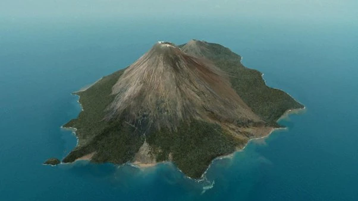
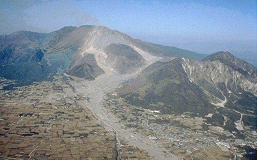
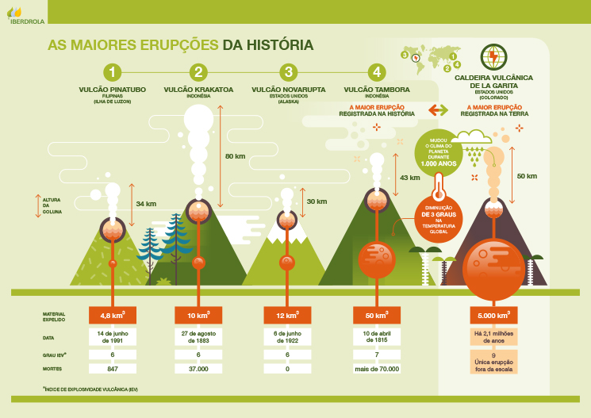

Provavelmente você já deve ter escutado de alguém, ou visto em algum lugar, sobre alguma erupção vulcânica que acabou com uma região inteira. Infelizmente, isso já aconteceu diversas vezes causando muitas mortes. O maior supervulcão da Terra foi descoberto em 2013, conhecido como Tamu Massif, tem 4 km de altura e 640 km de largura e repousa no fundo do oceano Pacífico, no leste do Japão.
Aqui estão listadas as principais erupçẽs da história:
Tambora, Indonésia (1815)
Tambora é um vulcão ativo localizado no arco vulcânico das Pequenas Ilhas da Sonda, hoje na Indonésia. Tendo uma altura de 4300m de altitude antes da erupção, forma a península de Sanggar, com 60km de largura, a norte da ilha de Sumbawa.
A erupção do monte Tambora aconteceu entre 5 e 10 de abril de 1815, sendo uma das mais fortes já registradas, atingindo o nível 7 no Índice de Explosividade Vulcânica. Ela foi considerada a maior já vista na terra, possuindo o volume de matéria expelida de 180 km³.

Foi uma erupção explosiva da chaminé central com fluxos piroclásticos (corrente veloz de gás quente, cinzas e pedras que desce pelas encostas de um vulcão durante uma erupção explosiva) e um colapso da caldeira, causando tsunamis e problemas extensos em terras e propriedades, criando um efeito de longo prazo sobre o clima mundial. Essa erupção acabou em 15 de julho de 1815 e a atividade seguinte foi registrada em agosto de 1819, constituindo - se de uma pequena erupção com jatos de lava e ruidosos terremotos vulcânicos, sendo considerada parte da erupção de 1815 por algumas pessoas.
Aproximadamente em 1880, Tambora entrou em erupção novamente, mas somente no interior da caldeira. As perdas foram estimadas em mais de 100 mil mortes em decorrência da erupção, que expeliu milhões de toneladas de cinzas vulcânicas e dióxido de enxofre em direção à atmosfera, provocando o famoso ano sem verão, em 1816.
Krakatoa, Indonésia (1883)
A erupção do Krakatoa aconteceu em 27 de agosto de 1883, na ilha localizada entre as ilhas de Sumatra e Java, na atual Indonésia. A ilha de Krakatoa desapareceu quando o vulcão homônimo, no monte Perboewatan (hoje extinto) entrou em erupção. Ela é considerada a segunda maior erupção vulcânica mais fatal da história, e a sexta maior do mundo.
A caldeira de magma era monstruosa, tendo aproximadamente 16km de diâmetro. O vulcão não parou de cuspir lava, a série de erupções durou 22 horas, causando mais de 36 mil mortes. E houve ainda outras explosões durante todo o ano. Sua explosão disparou pedras a aproximadamente 27 km de altitude, o som da explosão pôde ser ouvida há mais de 5 mil quilômetros a partir do local, tendo relatos de pessoas que tiveram seus tímpanos rompidos.

Os efeitos atmosféricos resultantes, como poeira e cinzas, causaram estranhas mudanças na Terra, como a repentina queda de temperatura e transformações ao nascer e pôr do sol por aproximadamente 18 meses, levando anos para voltar ao normal. E todas as formas de vida existentes na ilha foram destruídas.
Aconteceram diversos tsunamis no mundo todo por causa das explosões. Perto das ilhas de Java e Sumatra, as ondas chegaram a mais de 40 metros de altura. E por esse motivo, a maioria das vítimas foram mortas por causa das tsunamis causadas pela sequência de quatro explosões do Krakatoa, chegando a diversas partes do mundo todo.
Monte Pelée, Martinica (1902)
O Monte Pelé é um vulcão situado no norte da Martinica, no Caribe. Ele é conhecido pela sua grande erupção em 1902, uma das piores já registradas, causando a morte de mais de 30 mil pessoas e a destruição total da cidade de Saint-Pierre, no pé da montanha. Houve apenas dois sobreviventes, um prisioneiro que estava numa cela solitária e um sapateiro que vivia na periferia da cidade, ainda há fontes que citam uma menina.
A erupção aconteceu em 8 de maio de 1902, quando uma nuvem ardente se soltou do alto do vulcão e destruiu a cidade de Saint-Pierre inteira. O fluxo piroclástico, uma cinza vulcânica com cerca de 300 °C, cobriu 20km da cidade, e logo depois veio a lava com aproximadamente 1000 °C. O efeito foi tão devastador que em três minutos exterminou todo aquele povo, derreteu diversas construções, e várias pessoas foram encontradas de formas desumanas.

A verdade é que o Monte Pelé já estava dando indícios de uma possível erupção meses antes do ocorrido. Aconteceram algumas tempestades de cinzas, tremores, atividades estranhas de animais, e até pediram para alguém fazer um relatório da situação, porém não deram importância.
Algumas pessoas que souberam dos ocorridos acabaram ficando com medo e fugindo para as cidades próximas, sendo Saint-Pierre onde estava a maior concentração. O dia da erupção acabou caindo num feriado, o que incentivou mais pessoas a irem para a cidade. A última erupção registrada aconteceu entre 1929 e 1932, com o monte sendo monitorado regularmente.
Nevado del Ruiz, Colômbia (1985)
O vulcão Nevado del Ruiz localizado na Colômbia, estava há décadas sem uma grande erupção, mas no dia 13 de novembro de 1985 ele acordou e destruiu a cidade de Armero, dentre outras cidades próximas. A erupção derreteu boa parte das geleiras e da neve do vulcão, formando grandes lahars (fluxos de lama, água, pedras e detritos que desceram pelos rios e atingiram as cidades próximas). A cidade de Armero, principal zona de risco, foi praticamente destruída. Aproximadamente 25 mil pessoas morreram no total, e outras milhares ficaram feridas ou desabrigadas, sendo que várias comunidades foram afetadas.
Antes da erupção, geólogos tinham alertado as autoridades e ao governo, fazendo mapas indicando as áreas de risco. Porém, houve uma má distribuição de informação, os sistemas de comunicação falharam durante uma forte tempestade e a população não foi evacuada corretamente. Por causa disso, teve muitas críticas relacionadas à preparação e às atitudes das autoridades e do governo. Uma faixa em um funeral em massa em Ibagué dizia: "O vulcão não matou 22 mil pessoas. O governo os matou."

Os esforços de resgate foram dificultados pela grande quantidade de lama e pela destruição das estradas, pontes e hospitais. Omayra Sánchez, uma jovem vítima que ficou presa nos destroços, tornou-se um dos símbolos da tragédia após fotografias do caso serem divulgadas internacionalmente.
Depois dessa catástrofe, a Colômbia passou a investir mais nos monitoramentos de vulcões, mapas de risco, sistemas de alerta e planos de evacuação.
Unzendake, Japão (1792)
O vulcão Unzendake, mais conhecido como Unzen, no Japão, explodiu no dia 21 de maio de 1792 durante o período Edo, causando deslizamentos de terra e tsunami.
No final de 1791, uma sequência de terremotos aconteceu na encosta oeste do Monte Unzen, que progressivamente se deslocou em direção a Fugen-dake (um dos picos do Monte Unzen). Em fevereiro de 1792, Fugen-dake entrou em erupção, desencadeando um fluxo de lava que durou dois meses. Enquanto isso, os terremotos continuaram, aproximando-se da cidade de Shimabara. Na noite de 21 de maio, dois grandes terremotos foram seguidos pelo colapso da encosta leste da cúpula Mayuyama do Monte Unzen, causando um deslizamento de terra que varreu a cidade de Shimabara e desaguou no Mar de Ariake , desencadeando um grande tsunami.

Ao todo, foram 15 mil mortes, acredita-se que por volta de 5 mil tenham sido por causa do deslizamento de terra, cerca de 5 mil pelo tsunami que atravessou a baía de Higo e outras 5 mil pelo tsunami que retornou para atingir Shimabara. A onda inicial chegou a medir 100 metros, já na ponta de Osakibana, as ondas chegaram a atingir uma altura de 57 metros.
Índice de Explosividade
